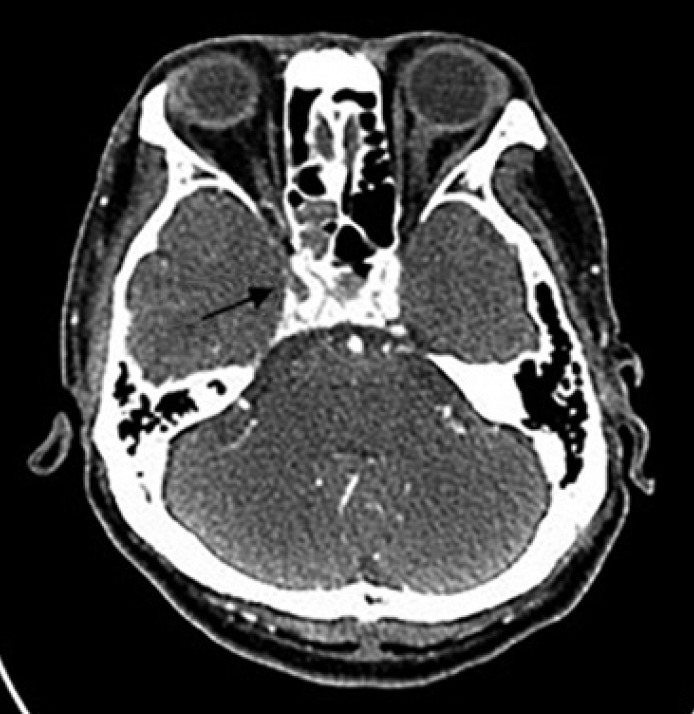
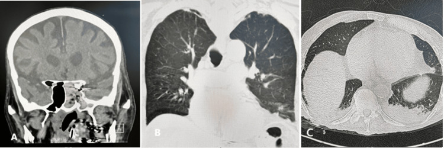
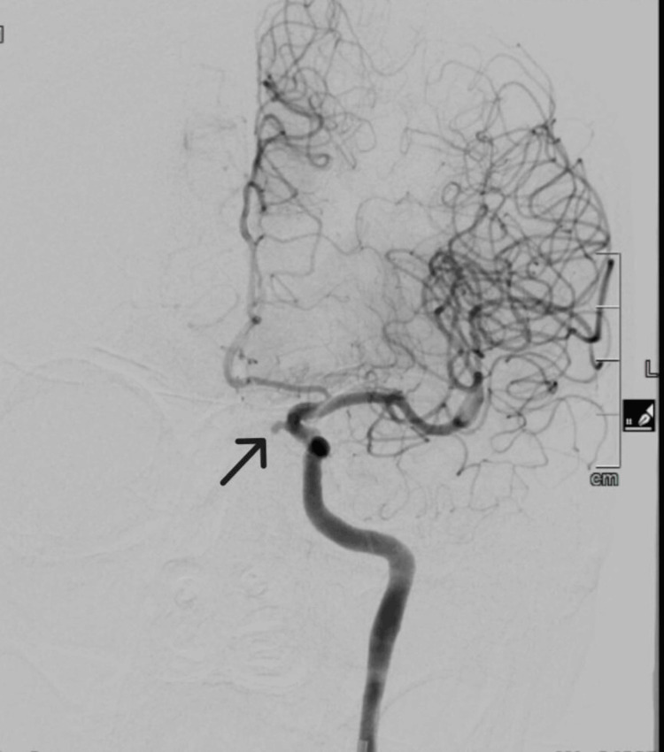
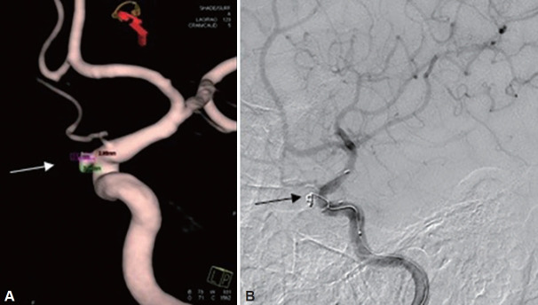

3046 — Chảy máu cam ồ ạt do vỡ giả phình động mạch cảnh trong vào xoang bướm
Tags: pattern:chay-mau-cam pattern:gia-phinh pattern:carotid-blowout pattern:khong-dong-bang vung:xang-buom vung:dau-co protocol:CTA protocol:DSA
Mức chắc chắn (certainty): tổng hợp y văn (literature synthesis) — ghép ca giả phình ĐM cảnh trong đoạn trên hang vỡ vào xoang bướm kèm tổng quan y văn (Cureus 2025, PMC12382422), ca giả phình xoang bướm sau chấn thương được stent + coil (J Rhinol 2024, PMC11566536), ca giả phình đoạn hang sau chấn thương hàm mặt, mất máu 800–1.000 mL/đợt (JNMA 2022, PMC9199992), ca giả phình đoạn xương đá sau xạ ung thư vòm, đặt stent-graft (Radiol Case Rep 2022, PMC9024372), ca tử vong sau khi lấy cục máu đông trong họng (World J Clin Cases 2022, PMC9477061), đoàn hệ 46 ca hội chứng vỡ mạch cảnh sau xạ (Cancer Manag Res 2025, PMC11974565), đoàn hệ 44 ca hội chứng vỡ mạch cảnh (Acta Otorhinolaryngol Ital 2025, PMC12673942), đoàn hệ 1.084 bệnh nhân ung thư đầu cổ sau xạ (Diagnostics 2024, PMC11202696) và nghiên cứu giải phẫu xoang bướm trên 230 CT (Head Face Med 2022, PMC9440488). Không có ca do nhóm tự chụp.
Câu hỏi thực hành: nam 55 tuổi, chảy máu cam ồ ạt tái phát 3 lần trong 2 tuần, mỗi lần ~500 mL, lần này tụt HA, nội soi thấy máu từ ngách bướm, trước đó 1 năm có mổ hàm mặt sau tai nạn. Câu hỏi: nhồi bấc mũi sau rồi theo dõi được không, chụp gì và chụp lúc nào, và vì sao đây không phải "chảy máu cam nặng thông thường"? Bài chốt ba quyết định: (1) chảy máu từ đâu (ngách bướm = động mạch cảnh cho tới khi chứng minh ngược lại)? (2) cầm máu tạm bằng gì và KHÔNG được làm gì? (3) can thiệp nội mạch: bít mẹ hay giữ mẹ bằng stent-graft, và dựa vào gì để chọn? Nối 249 – Rò động mạch cảnh–xoang hang chấn thương, 248 – Can thiệp nội mạch giả phình/bóc tách động mạch cổ, 3023 – Ù tai mạch đập.
1. Tổng quan bệnh học – cơ chế hình ảnh: vì sao "chảy máu cam" có thể là vỡ động mạch cảnh
- Giải phẫu quyết định tất cả: động mạch cảnh trong (internal carotid artery, ICA) đoạn hang nằm ngay thành bên của xoang bướm, chỉ cách lòng xoang bằng một lá xương mỏng — hoặc không có xương. Trên 230 CT xoang bướm, lồi (protrusion) ICA gặp 26,3%, dehiscence (mất xương che) 0,4%; vách liên xoang bám vào thành ICA ở 21,6% ca (Head Face Med 2022, PMC9440488). Nghĩa là: 1/4 người có mạch cảnh lồi vào xoang, và khi có chấn thương, xạ trị, nhiễm nấm xâm lấn hay phẫu thuật thì chỗ mỏng nhất vỡ trước.
- TẠI SAO chảy máu ồ ạt và không tự cầm: giả phình (pseudoaneurysm) không có thành mạch thật — chỉ là túi tổ chức xơ/viêm bịt lỗ thủng. Khi vỡ, máu phun vào xoang bướm ở áp lực động mạch (hàng trăm mmHg tâm thu); xoang bướm là khoang kín đổ vào ngách bướm nên máu chảy ồ ạt qua mũi chứ không tạo khối máu tụ tự cầm. Mỗi "cục máu đông bít tạm" chỉ là nút sinh lý — nó bong ra khi xì mũi, ho, nội soi, hút dịch.
- Ngưỡng định lượng phải thuộc:
- Tử vong khi không điều trị: > 50% (tổng quan trong ca Cureus 2025); chảy máu cam ồ ạt được báo cáo ở ~9% ca giả phình/giãn ĐM cảnh trong báo cáo y văn.
- Hội chứng vỡ mạch cảnh (carotid blowout syndrome, CBS) sau xạ đầu cổ: trong đoàn hệ 1.084 bệnh nhân, tỷ lệ 0,8% (xạ vòm 0,9%, không vòm 0,7%); tỷ lệ tích lũy gộp 5% (95% CI 3–7%) (Diagnostics 2024, PMC11202696).
- 44 ca CBS được can thiệp nội mạch: cầm máu 95%, biến chứng thiếu máu não 11%, tái chảy máu 16%, sống 6 tháng 28%; thể hiện lúc đến: chảy máu đe doạ 62%, "máu báo" (sentinel) 11%, vỡ cấp 27% (Acta Otorhinolaryngol Ital 2025, PMC12673942).
- 46 ca CBS sau xạ ung thư vòm (29 coil, 17 stent-graft): cầm máu ngay 100%, tái chảy 1 năm 8,6%, biến chứng 8,6% (chủ yếu nhồi máu não), sống 1 năm 89,1%; coil ít tái chảy hơn, stent-graft giữ được lòng mạch tốt hơn (Cancer Manag Res 2025, PMC11974565).
- TẠI SAO "vài tuần trước có chảy máu nhẹ" lại quan trọng: máu báo (sentinel bleed) là dấu hiệu cảnh báo của túi giả phình đang rò rỉ, xuất hiện trước khi vỡ hoàn toàn — bỏ qua giai đoạn này là bỏ mất cơ hội can thiệp chủ động (11% ca trong loạt trên đến ở giai đoạn này, và tiên lượng tốt hơn nhiều so với vỡ cấp).
- TẠI SAO cơ chế "nhiễm" cũng phải nhớ: viêm xoang do nấm xâm lấn (Aspergillus, Mucor) ăn mòn thành mạch từ ngoài vào. Trong y văn, Mucor gây tắc ICA tới 84%, còn Aspergillus 46% nhưng thiên về tạo phình thật/giả phình và xuất huyết dưới nhện (Cureus 2025, PMC12382422). Vì vậy ở người suy giảm miễn dịch, mờ xoang bướm + mòn xương + chảy máu là tam chứng của viêm nấm xâm lấn, không phải "viêm xoang thường".
2. Mẫu hình + chẩn đoán phân biệt theo vị trí chảy máu (gamut)
- Gamut theo vị trí giải phẫu (nội soi + CTA):
| Vị trí nguồn | Bệnh cảnh gợi ý | Đặc điểm hình ảnh |
|---|---|---|
| Thành bên xoang bướm (đoạn hang ICA) | Chấn thương hàm mặt, xạ vòm, viêm nấm, phẫu thuật tuyến yên qua xoang bướm | Túi giả phình lồi vào lòng xoang, mòn/thủng thành xoang bướm, có thể kèm rò cảnh–hang |
| Đoạn xương đá/zang (petrous, C2) | Xạ trị vòm họng, nhiễm trùng nền sọ | Túi ở ngang ống cảnh, khó thấy nội soi; biểu hiện máu chảy qua ngách bướm/vòm |
| Đoạn trên hang (supraclinoid) | Viêm nấm xâm lấn, sau mổ nội soi | Vừa chảy mũi vừa nguy cơ xuất huyết dưới nhện (nằm trong khoang dưới nhện) |
| Động mạch bướm khẩu cái / động mạch sàng | Chảy máu cam thường, tăng huyết áp | Nguồn nhỏ, không có túi, cầm bằng bấc/nội soi đốt |
| U mạch vách ngăn, u cuộn cảnh, u nhú đảo ngược | Chảy máu tái phát + khối | Khối ngấm mạnh, không có túi mạch; không sinh thiết mù |
- Gamut theo cơ chế (dùng để hỏi bệnh):
- Chấn thương: tai nạn giao thông, gãy xương hàm mặt/nền sọ, đặt catheter, mổ nội soi xoang (thường 1 tuần–1 năm sau).
- Sau xạ trị: ung thư vòm họng, ung thư đầu cổ — trung vị nhiều tháng tới nhiều năm; ca báo cáo: 31 tháng sau hóa–xạ (Current Med Imaging 2025, PMC13223408).
- Nhiễm trùng: viêm xoang nấm xâm lấn ở người suy giảm miễn dịch (bạch cầu cấp, ghép tạng, corticoid dài ngày), viêm mô tế bào hàm mặt.
- Tự phát: phình/giả phình đoạn hang, rò động mạch cảnh–xoang hang (CCF) — thường kèm ù tai mạch đập, đỏ mắt, liệt dây VI (3023, 249).
- Ba thể lúc đến (theo loạt 44 ca): chảy máu đe doạ (62%) — máu rỉ qua vết thương/niêm mạc, chưa ồ ạt · máu báo (11%) — vài đợt nhỏ trước đó · vỡ cấp (27%) — ồ ạt, sốc, đường thở nguy hiểm. Thể càng muộn, tiên lượng càng xấu.
3. Bảng so sánh phân biệt (ma trận đối chiếu)
| Thực thể (entity) | Hình ảnh điển hình | Chốt vào (rule-in) | Chốt loại (rule-out) | Gợi ý xác nhận |
|---|---|---|---|---|
| Giả phình ICA vỡ vào xoang bướm | CT: xoang bướm mờ + mòn xương thành bên/thân xương bướm; CTA: túi cản quang lồi khỏi lòng mạch, cổ túi rõ | Túi lồi từ ICA + mòn xương xoang bướm + chảy máu từ ngách bướm | Không có túi, thành mạch đều → không phải giả phình | CTA 1 mm rồi DSA xác nhận + điều trị; BTO nếu tính bít mẹ |
| Rò động mạch cảnh–xoang hang (CCF) | Xoang hang giãn, giãn tĩnh mạch mắt trên, lồi mắt, giãn các xoang tĩnh mạch cùng bên; thì động mạch và thì tĩnh mạch đều đầy sớm | Đầy sớm xoang hang ở thì động mạch + lồi mắt/ù tai mạch đập | Xoang hang đầy thì tĩnh mạch bình thường → loại | DSA 4 mạch; phân loại Barrow A–D; can thiệp nội mạch |
| Máu tụ tổ chức hoá trong xoang bướm (organized hematoma) | Khối mô mềm trong xoang bướm, CT tăng tỷ trọng không đều, không có túi mạch; MRI có vòng hemosiderin | Khối trong xoang, không có túi mạch trên CTA | Có túi lồi từ ICA → loại | MRI + CTA; nội soi lấy bệnh phẩm sau khi loại mạch |
| Viêm xoang nấm xâm lấn | Mờ xoang + mòn xương lan rộng, mất vách; mô mềm lan ra ngoài xoang; không có túi mạch | Mờ + mòn xương tiến triển nhanh ở người suy giảm miễn dịch | Xương nguyên vẹn, không lan → loại | Nội soi sinh thiết + nấm học; CTA để loại giả phình trước khi đụng vào |
| U mạch vách ngăn/u cuộn cảnh | Khối ngấm mạnh, có cuống mạch nuôi; không có túi | Khối ngấm + mạch nuôi, không có cổ túi | Có cổ túi từ ICA → loại | MRI + MRA; không sinh thiết khối đập |
| Chảy máu cam thông thường (điểm mạch Little) | Niêm mạc vách trước, không tổn thương mạch lớn | Nguồn vách trước, bấm/nội soi đốt cầm | Máu từ ngách bướm/sau, tái phát, mất máu lớn → loại | Nội soi; nếu sau/về phía bướm → CTA |

CTA (J Rhinol 2024, PMC11566536): giả phình phát sinh từ đoạn hang của động mạch cảnh trong, sát vị trí vỡ vào xoang bướm ở bệnh nhân 55 tuổi có chấn thương vùng mũi–mặt; được xử trí bằng stent + coil. Đây là hình mẫu "túi lồi có cổ" — khác hoàn toàn với mờ xoang đơn thuần. Nguồn: CC BY-NC 4.0, nguyên bản.4. Protocol chụp + ngưỡng xử trí
- Bước 0 — cầm máu tạm và bảo vệ đường thở (song song với gọi điện quang):
- Bấm/nhồi bấc mũi trước, nếu thất bại → bấc mũi sau hoặc bóng chèn (Foley/balloon) vào ngách bướm; đặt hai đường truyền lớn, truyền máu theo phác đồ truyền máu khối lượng lớn.
- Đặt nội khí quản sớm nếu chảy máu ồ ạt — đường thở là nguyên nhân tử vong nhanh nhất.
- KHÔNG làm: sinh thiết khối trong xoang, hút/bóc cục máu đông ở họng hay ngách bướm, nội soi can thiệp vào xoang bướm khi chưa có kiểm soát mạch — đã có ca tử vong do hút cục máu đông khi soi thanh quản sau khi đã coil "thành công", bệnh nhân mất máu không hồi phục (World J Clin Cases 2022, PMC9477061).
- Bước 1 — CTA (đầu tiên, chạy được 24/7): lát ≤ 1 mm, thì động mạch và thì tĩnh mạch muộn, cửa sổ xương; đọc thành xoang bướm, ống cảnh, xoang hang, tĩnh mạch mắt trên. CTA đủ để phát hiện túi giả phình và mòn xương, đồng thời loại nguyên nhân khác.
- Bước 2 — DSA (chuẩn vàng, vừa chẩn đoán vừa điều trị): chụp 4 mạch + nghiệm pháp bít bóng (balloon test occlusion, BTO) khi cân nhắc bít mẹ. BTO cải thiện/hợp tác tốt là dữ liệu chọn lựa: trong loạt 12 ca diverticulum bóng cảnh, BTO cải thiện ≥ trung bình ở 7/8 (87,5%) — dùng như yếu tố dự đoán, không phải bảo đảm (Front Neurol 2026, PMC13686904).
- Ba lựa chọn can thiệp và ngưỡng chọn:
| Chiến lược | Khi chọn | Ưu điểm | Giá phải trả |
|---|---|---|---|
| Stent-graft (giữ mẹ) | Có BTO không dung nạp, cần giữ tưới máu; tổn thương đoạn xương đá/đoạn hang, cổ túi rộng | Giữ lòng mạch, không nhồi máu; ca báo cáo cầm máu ngay, không biến chứng (PMC9024372) | Cần kháng kết tập tiểu cầu; nguy cơ hẹp trong stent, hở nội mạc, nhiễm stent-graft; không dùng khi có nhiễm trùng hoạt động |
| Coil ± stent (bít túi) | Cổ túi hẹp/vừa, dòng chảy đủ qua mẹ, có nhiễm trùng tại chỗ | Bít túi chọn lọc, giữ mẹ; ca báo cáo thành công (PMC9199992, PMC11566536) | Coil lộ ra niêm mạc → chảy máu tái phát; tái chảy 16% trong loạt 44 ca |
| Bít mẹ (parent artery occlusion) | BTO dung nạp, tổn thương không thể bít chọn lọc, chảy máu không cầm | Cầm máu chắc nhất | Nhồi máu não nếu BTO không đủ; 11% biến chứng thiếu máu trong loạt 44 ca |
- Số liệu để tư vấn (không tự quyết): cầm máu ngay 100% ở 46 ca sau xạ vòm; tái chảy 1 năm 8,6%, biến chứng 8,6%, sống 1 năm 89,1% (PMC11974565). Ở loạt 44 ca nặng hơn (84% ung thư giai đoạn muộn, 57% có mở khí quản), sống 6 tháng chỉ 28%, 66% tử vong do tiến triển bệnh (PMC12673942) — nghĩa là cầm máu thành công không đồng nghĩa sống sót, phải bàn với gia đình.
flowchart TD
A[Chảy máu cam ồ ạt tái phát] --> B{Máu từ ngách bướm hoặc sau, có tiền sử chấn thương, xạ, nấm, mổ?}
B -->|Không| C[Cầm máu thông thường: bấm, đốt điểm mạch, kiểm tra đông máu và huyết áp]
B -->|Có| D[Bấc mũi sau hoặc bóng chèn, hai đường truyền lớn, bảo vệ đường thở]
D --> E[CTA 1 mm có thì động mạch và tĩnh mạch]
E --> F{Có túi giả phình hoặc mòn thành xoang bướm?}
F -->|Không| G[Tìm nguồn khác: u, viêm nấm, rối loạn đông máu; nội soi có chuẩn bị]
F -->|Có| H[DSA 4 mạch + nghiệm pháp bít bóng]
H --> I{Bít bóng dung nạp?}
I -->|Không dung nạp| J[Stent-graft giữ mẹ + kháng kết tập tiểu cầu]
I -->|Dung nạp| K[Coil chọn lọc hoặc bít mẹ tùy hình thái cổ túi]
J --> L[Theo dõi 24 giờ: chảy máu tái phát, thiếu máu não, nhiễm trùng]
K --> L
- Theo dõi sau can thiệp: 24 giờ đầu là cửa sổ tái chảy máu và thiếu máu não; chụp lại CTA/DSA nếu còn rỉ máu; không hút/bóc cục máu đông ở họng–mũi trong 48–72 giờ đầu; kiểm tra kháng kết tập tiểu cầu nếu đặt stent-graft.
5. Biến thể bình thường và cạm bẫy
- Bẫy số 1 — "chảy máu cam nặng, nhồi bấc là xong": bấc bịt được lỗ vỡ và che mất dấu hiệu, bệnh nhân "ổn" vài giờ rồi vỡ lại ồ ạt; mọi ca tái phát + mất máu lớn + máu từ ngách bướm phải CTA trước khi cho về.
- Bẫy số 2 — bóc cục máu đông: ca tử vong trong bài (PMC9477061) xảy ra sau khi đã coil và túi đã tắc hoàn toàn trên DSA, chỉ vì hút cục máu đông khi soi thanh quản — máu trong hốc mũi không phải "máu cũ" mà là nút bịt của một tổn thương chưa lành.
- Bẫy số 3 — mờ xoang bướm đơn thuần: ở người suy giảm miễn dịch, mờ xoang + mòn xương là viêm nấm xâm lấn, và mòn xương thân bướm là dấu hiệu đe doạ mạch cảnh — phải CTA trước khi nội soi làm sạch.
- Bẫy số 4 — lồi mạch cảnh là biến thể, không phải bệnh: 26,3% người có ICA lồi vào xoang bướm và 21,6% có vách bám vào thành ICA; chỉ dehiscence (0,4%) mới là mất xương che. Đừng gọi "nguy cơ vỡ" chỉ vì thấy lồi — nguy cơ đến từ bệnh nền (xạ, nhiễm, chấn thương), không từ biến thể đơn thuần.
- Bẫy số 5 — "đã cầm máu" trên DSA ≠ an toàn: 16% tái chảy trong loạt 44 ca; coil lộ ra niêm mạc và nhiễm tại chỗ là hai cơ chế tái chảy phải theo dõi.
- Bẫy số 6 — bỏ sót tổn thương thứ hai: sau xạ vòm, cả hai bên có thể có bệnh mạch; luôn chụp 4 mạch và đọc toàn bộ trục cảnh–sống nền, không chỉ bên chảy máu.
- Cạm bẫy mặt cắt: trên CT không cản quang, túi giả phình đồng tỷ trọng với máu trong xoang và dễ bị đọc là "máu tụ"; chỉ thì động mạch mới tách được túi có lòng khỏi máu đông.
6. Tự lượng giá — Blind Quiz
Ca 1 — Người suy giảm miễn dịch, chảy máu cam ồ ạt, xoang bướm mờ.

- Gợi ý lâm sàng: nam 82 tuổi, ung thư tuyến tiền liệt đã xạ, suy tim; chảy máu cam ồ ạt + ho ra máu; nội soi thấy nấm trong xoang bướm.
- Câu hỏi: Trên CT (A) có hai dấu hiệu nào quan trọng nhất? Vì sao phải CTA trước khi làm sạch xoang?
Bấm để hiện đáp án (findings + chẩn đoán)
- Dấu hiệu (findings): A — xoang bướm trái mờ hoàn toàn, mòn thân xương bướm (clivus) và mỏng rõ rệt thành sau xoang bướm sát đoạn trên hang của động mạch cảnh trong trái; B, C — hình phổi (giãn phế quản nhẹ, tràn dịch màng phổi hai bên).
- Chẩn đoán (diagnosis): viêm xoang nấm xâm lấn có đe doạ/đã vỡ động mạch cảnh trong — CTA sau đó xác nhận giả phình đoạn trên hang, và bệnh nhân được coil sau khi BTO cho thấy tuần hoàn bàng hệ đủ.
- Vì sao: thành xoang bướm chỉ còn một lá xương mỏng; nấm ăn mòn từ ngoài vào → không được nạo/sinh thiết mù trước khi biết mạch ở đâu.
- Phản biện nguồn: đây là ca nguyên văn (bệnh nhân sau đó tử vong do biến chứng tim–hô hấp), không dùng để suy ra tần suất; tử vong khi không điều trị > 50% lấy từ tổng quan trong bài.
- Nguồn ảnh: Cureus 2025 (PMC12382422), CC BY 4.0.
Ca 2 — CTA của túi giả phình đoạn hang.

- Gợi ý lâm sàng: cùng bệnh nhân Ca 1, sau khi nấm đã được làm sạch và chảy máu tái phát.
- Câu hỏi: Mô tả túi. Túi nằm ở đoạn nào của động mạch cảnh? Vì sao vị trí này vừa gây chảy mũi vừa gây xuất huyết dưới nhện?
Bấm để hiện đáp án
- Dấu hiệu (findings): CTA mặt phẳng vành (coronal) — túi cản quang lồi ra từ đoạn trên hang (supraclinoid) của động mạch cảnh trong trái, cổ túi rõ.
- Chẩn đoán (diagnosis): giả phình đoạn trên hang — điều trị bằng coil sau BTO.
- Vì sao: đoạn trên hang nằm trong khoang dưới nhện nên vỡ gây xuất huyết dưới nhện, nhưng túi cũng ăn vào xoang bướm nên gây chảy máu cam ồ ạt — hai đường chảy của cùng một túi.
- Nguồn ảnh: Cureus 2025 (PMC12382422), CC BY 4.0.
Ca 3 — Sau khi bít túi, làm gì tiếp?

- Gợi ý lâm sàng: nam 55 tuổi, chấn thương mũi–mặt, chảy máu cam tái phát; được stent + coil.
- Câu hỏi: Hai hình (A) và (B) cho thấy gì? Sau thủ thuật, việc nào tuyệt đối tránh và vì sao?
Bấm để hiện đáp án
- Dấu hiệu (findings): A — 3D CTA: coil trong túi cạnh động mạch cảnh; B — DSA: túi đã tắc, động mạch cảnh trong vẫn thông (stent giữ mẹ).
- Chẩn đoán (diagnosis): bít túi chọn lọc bằng stent + coil, giữ nguyên dòng chảy động mạch cảnh.
- Tuyệt đối tránh: hút/bóc cục máu đông hoặc nội soi can thiệp ở hốc mũi–họng trong những ngày đầu — ca tử vong trong y văn xảy ra đúng ở bước này dù DSA đã "tắc hoàn toàn" (PMC9477061); coil có thể lộ ra niêm mạc và chảy máu lại (tái chảy 16% trong loạt 44 ca).
- Nguồn ảnh: J Rhinol 2024 (PMC11566536), CC BY-NC 4.0.
Bài liên quan chéo
- 200 – Tổng quan hệ Thần kinh
- 249 – Rò động mạch cảnh–xoang hang chấn thương
- 248 – Can thiệp nội mạch giả phình/bóc tách động mạch cổ
- 247 – Bóc tách động mạch cổ
- 3023 – Ù tai mạch đập: tiếp cận hình ảnh
- 091 – Ho ra máu ồ ạt và nút mạch động mạch phế quản
Ảnh
- 4 ảnh: 2 ảnh CC BY 4.0 (Cureus 2025) + 2 ảnh CC BY-NC 4.0 (J Rhinol 2024) — nguyên bản, không crop/ghép; chi tiết trong
images/CREDITS.md. - Không tạo ảnh ghép: hai bài gốc khác bệnh cảnh (viêm nấm xâm lấn ở người suy giảm miễn dịch vs chấn thương hàm mặt) và một ảnh là license NC (phi thương mại) — ghép sẽ làm mờ ranh giới bệnh cảnh.
Không dùng để chẩn đoán độc lập khi chưa có người hướng dẫn.